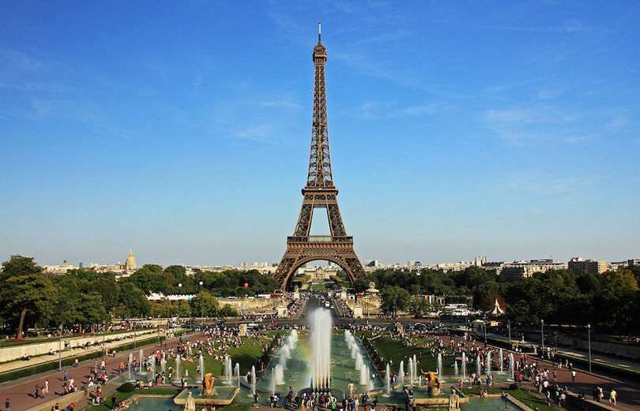
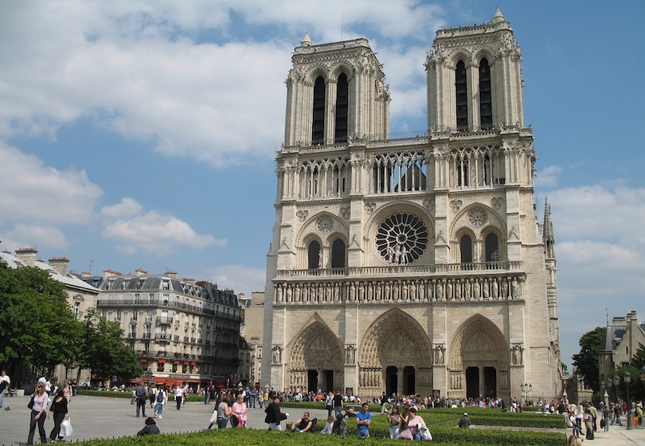
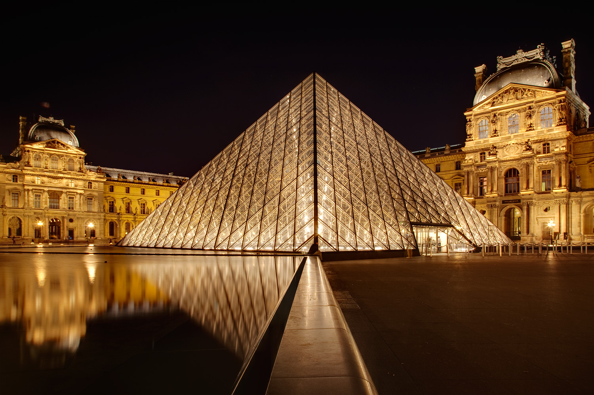

The history of Paris dates back to approximately 259 BC, with the Parisii, a Celtic tribe settled on the banks of the Seine. In 52 BC, the fishermen village was conquered by the Romans, founding a Gallo-Roman town called Lutetia. The city changed its name to Paris during the fourth century. During this period, the city was threatened by Attila the Hun and his army, and according to the legend, the inhabitants of Paris resisted the attacks thanks to the providential intervention of Saint Geneviève (patron saint of the city). In 508 the first king of the Franks, Clovis I, made Paris the capital of his empire. In 987, the Capetian dynasty came to power until 1328. During the eleventh century, Paris gradually became more prosper thanks to its trade in silver and because it was a strategic route for pilgrims and traders.The new Constitution was not accepted by monarchic groups and Jacobins. Several uprisings took place in Paris, but were all repressed by the army. Nevertheless, on 9 November 1799, the army was unable to crush the coup d’état led by Napoleon Bonaparte, which overthrew the Directory and replaced it by the Consulate, Napoleon being First Consul. During the following fifteen years, Napoleon enlarged the Place du Carrousel, built two Arcs de Triomphe, a column, several markets, the Paris bourse and a few slaughter houses. The Napoleonic Wars – and with it the Empire of Napoleon – ended on 20 November 1815, after Napoleon had been defeated at the Battle of Waterloo, and the second Treaty of Paris of 1815 was signed.
From the eiffel tower to the notre dame Paris is full of all sorts of attractions including its Internationally known museum The Louvre house to the famous Mona Lisa painted by the Artist: Leonardo da Vinci